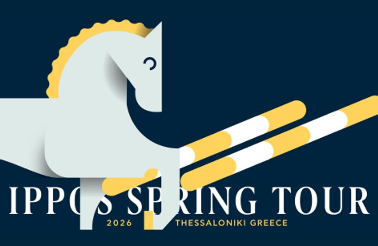

Marcel Schneider conquista el Gran Premio del CSI3* de Thessaloniki

El alemán Marcel Schneider se adjudicó el Gran Premio del CSI3* de Thessaloniki con Chucky PS, en una prueba decidida al desempate sobre el 1,50 metros del Ippos Club. Schneider firmó el doble cero más rápido al detener el crono en 40,22 segundos, en una manga decisiva que reunió a varios de los referentes de la…
El alemán Marcel Schneider se adjudicó el Gran Premio del CSI3* de Thessaloniki con Chucky PS, en una prueba decidida al desempate sobre el 1,50 metros del Ippos Club. Schneider firmó el doble cero más rápido al detener el crono en 40,22 segundos, en una manga decisiva que reunió a varios de los referentes de la gira oriental europea.
La segunda plaza fue para Thomas Mang con Grand Zara, también sin penalización en el desempate y con un crono de 41,88 segundos, mientras que el turco Necmi Eren cerró el podio con Pss Levilensky tras un crono prácticamente idéntico al del segundo (41,89 s). El podio reflejó la igualdad técnica del Gran Premio, en el que apenas centésimas separaron las posiciones de cabeza.
El Ippos Spring Tour, integrado en el Danube Champions Tour, consolida su presencia en el calendario internacional como una de las opciones de primavera para binomios del centro y este de Europa. La victoria de Schneider, habitual del circuito alemán, refuerza la conexión entre las cuadras germanas y los grandes premios disputados en el sureste del continente.
📊 Resultados completos
— Redacción de Hípica al Día